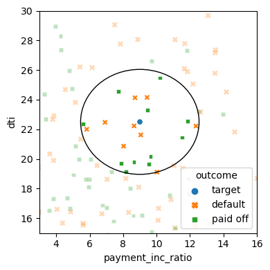
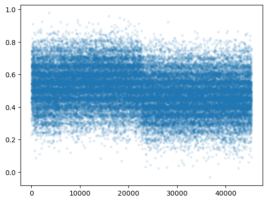
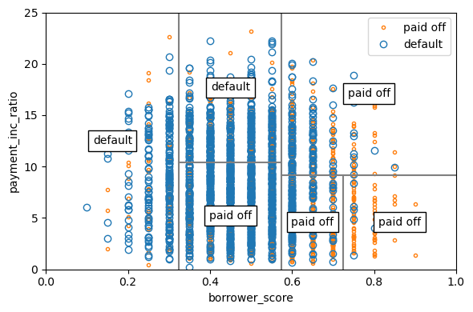
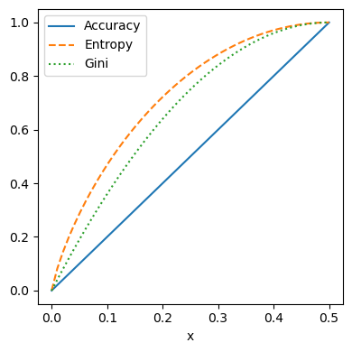
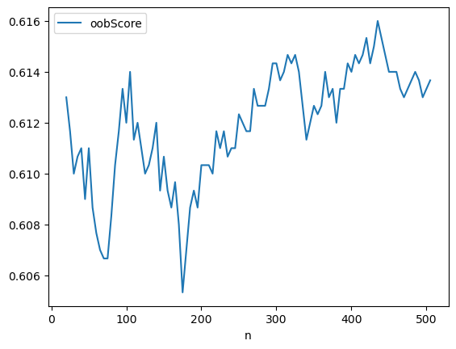
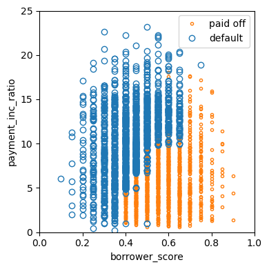
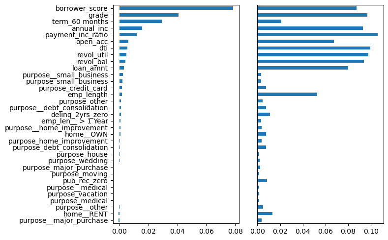
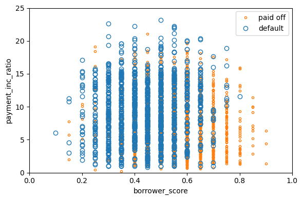
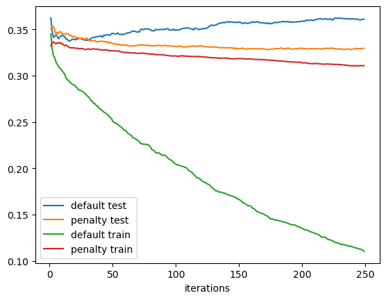

import math
import os
import random
from pathlib import Path
from collections import defaultdict
from itertools import product
import pandas as pd
import numpy as np
from sklearn import preprocessing
from sklearn.neighbors import KNeighborsClassifier
from sklearn import metrics
from sklearn.model_selection import train_test_split
from sklearn.tree import DecisionTreeClassifier
from sklearn.ensemble import RandomForestClassifier
from xgboost import XGBClassifier
from dmba import plotDecisionTree, textDecisionTree
import seaborn as sns
import matplotlib.pyplot as plt
from matplotlib.patches import Ellipse
%matplotlib inlineChapter 6 - Statistical Machine Learning
Practical Statistics for Data Scientists (Python)
- 2019 Peter C. Bruce, Andrew Bruce, Peter Gedeck
Import required Python packages.
try:
import common
DATA = common.dataDirectory()
except ImportError:
DATA = Path().resolve() / 'data'Define paths to data sets. If you don’t keep your data in the same directory as the code, adapt the path names.
LOAN200_CSV = DATA / 'loan200.csv'
LOAN3000_CSV = DATA / 'loan3000.csv'
LOAN_DATA_CSV = DATA / 'loan_data.csv.gz'Set this if the notebook crashes in the XGBoost part.
os.environ['KMP_DUPLICATE_LIB_OK'] = 'TRUE'K-Nearest Neighbors
A Small Example: Predicting Loan Default
loan200 = pd.read_csv(LOAN200_CSV)
predictors = ['payment_inc_ratio', 'dti']
outcome = 'outcome'
newloan = loan200.loc[0:0, predictors]
X = loan200.loc[1:, predictors]
y = loan200.loc[1:, outcome]
knn = KNeighborsClassifier(n_neighbors=20)
knn.fit(X, y)
knn.predict(newloan)
print(knn.predict_proba(newloan))[[0.45 0.55]]nbrs = knn.kneighbors(newloan)
maxDistance = np.max(nbrs[0][0])
fig, ax = plt.subplots(figsize=(4, 4))
sns.scatterplot(x='payment_inc_ratio', y='dti', style='outcome',
hue='outcome', data=loan200, alpha=0.3, ax=ax)
sns.scatterplot(x='payment_inc_ratio', y='dti', style='outcome',
hue='outcome',
data=pd.concat([loan200.loc[0:0, :], loan200.loc[nbrs[1][0] + 1,:]]),
ax=ax, legend=False)
ellipse = Ellipse(xy=newloan.values[0],
width=2 * maxDistance, height=2 * maxDistance,
edgecolor='black', fc='None', lw=1)
ax.add_patch(ellipse)
ax.set_xlim(3, 16)
ax.set_ylim(15, 30)
plt.tight_layout()
plt.show()
Standardization (Normalization, Z-Scores)
loan_data = pd.read_csv(LOAN_DATA_CSV)
loan_data = loan_data.drop(columns=['Unnamed: 0', 'status'])
loan_data['outcome'] = pd.Categorical(loan_data['outcome'],
categories=['paid off', 'default'],
ordered=True)
predictors = ['payment_inc_ratio', 'dti', 'revol_bal', 'revol_util']
outcome = 'outcome'
newloan = loan_data.loc[0:0, predictors]
print(newloan)
X = loan_data.loc[1:, predictors]
y = loan_data.loc[1:, outcome]
knn = KNeighborsClassifier(n_neighbors=5)
knn.fit(X, y)
nbrs = knn.kneighbors(newloan)
print(X.iloc[nbrs[1][0], :]) payment_inc_ratio dti revol_bal revol_util
0 2.3932 1.0 1687 9.4
payment_inc_ratio dti revol_bal revol_util
35536 1.47212 1.46 1686 10.0
33651 3.38178 6.37 1688 8.4
25863 2.36303 1.39 1691 3.5
42953 1.28160 7.14 1684 3.9
43599 4.12244 8.98 1684 7.2newloan = loan_data.loc[0:0, predictors]
X = loan_data.loc[1:, predictors]
y = loan_data.loc[1:, outcome]
scaler = preprocessing.StandardScaler()
scaler.fit(X * 1.0)
X_std = scaler.transform(X * 1.0)
newloan_std = scaler.transform(newloan * 1.0)
knn = KNeighborsClassifier(n_neighbors=5)
knn.fit(X_std, y)
nbrs = knn.kneighbors(newloan_std)
print(X.iloc[nbrs[1][0], :]) payment_inc_ratio dti revol_bal revol_util
2080 2.61091 1.03 1218 9.7
1438 2.34343 0.51 278 9.9
30215 2.71200 1.34 1075 8.5
28542 2.39760 0.74 2917 7.4
44737 2.34309 1.37 488 7.2KNN as a Feature Engine
loan_data = pd.read_csv(LOAN_DATA_CSV)
loan_data = loan_data.drop(columns=['Unnamed: 0', 'status'])
loan_data['outcome'] = pd.Categorical(loan_data['outcome'],
categories=['paid off', 'default'],
ordered=True)
predictors = ['dti', 'revol_bal', 'revol_util', 'open_acc',
'delinq_2yrs_zero', 'pub_rec_zero']
outcome = 'outcome'
X = loan_data[predictors]
y = loan_data[outcome]
knn = KNeighborsClassifier(n_neighbors=20)
knn.fit(X, y)
plt.scatter(range(len(X)), [bs + random.gauss(0, 0.015) for bs in knn.predict_proba(X)[:,0]],
alpha=0.1, marker='.')
knn.predict_proba(X)[:, 0]
loan_data['borrower_score'] = knn.predict_proba(X)[:, 0]
print(loan_data['borrower_score'].describe())count 45342.000000
mean 0.501091
std 0.128728
min 0.000000
25% 0.400000
50% 0.500000
75% 0.600000
max 0.950000
Name: borrower_score, dtype: float64
Tree Models
A Simple Example
The package scikit-learn has the class DecisionTreeClassifier to build a decision tree model. The function plotDecisionTree from the dmba package can be used to visualize the tree.
loan3000 = pd.read_csv(LOAN3000_CSV)
predictors = ['borrower_score', 'payment_inc_ratio']
outcome = 'outcome'
X = loan3000[predictors]
y = loan3000[outcome]
loan_tree = DecisionTreeClassifier(random_state=1, criterion='entropy',
min_impurity_decrease=0.003)
loan_tree.fit(X, y)
plotDecisionTree(loan_tree, feature_names=predictors, class_names=loan_tree.classes_)
print(textDecisionTree(loan_tree))node=0 test node: go to node 1 if 0 <= 0.5750000178813934 else to node 6
node=1 test node: go to node 2 if 0 <= 0.32500000298023224 else to node 3
node=2 leaf node: [[0.785, 0.215]]
node=3 test node: go to node 4 if 1 <= 10.42264986038208 else to node 5
node=4 leaf node: [[0.488, 0.512]]
node=5 leaf node: [[0.613, 0.387]]
node=6 test node: go to node 7 if 1 <= 9.19082498550415 else to node 10
node=7 test node: go to node 8 if 0 <= 0.7249999940395355 else to node 9
node=8 leaf node: [[0.247, 0.753]]
node=9 leaf node: [[0.073, 0.927]]
node=10 leaf node: [[0.457, 0.543]]The Recursive Partitioning Algorithm
fig, ax = plt.subplots(figsize=(6, 4))
loan3000.loc[loan3000.outcome=='paid off'].plot(
x='borrower_score', y='payment_inc_ratio', style='.',
markerfacecolor='none', markeredgecolor='C1', ax=ax)
loan3000.loc[loan3000.outcome=='default'].plot(
x='borrower_score', y='payment_inc_ratio', style='o',
markerfacecolor='none', markeredgecolor='C0', ax=ax)
ax.legend(['paid off', 'default']);
ax.set_xlim(0, 1)
ax.set_ylim(0, 25)
ax.set_xlabel('borrower_score')
ax.set_ylabel('payment_inc_ratio')
x0 = 0.575
x1a = 0.325; y1b = 9.191
y2a = 10.423; x2b = 0.725
ax.plot((x0, x0), (0, 25), color='grey')
ax.plot((x1a, x1a), (0, 25), color='grey')
ax.plot((x0, 1), (y1b, y1b), color='grey')
ax.plot((x1a, x0), (y2a, y2a), color='grey')
ax.plot((x2b, x2b), (0, y1b), color='grey')
labels = [('default', (x1a / 2, 25 / 2)),
('default', ((x0 + x1a) / 2, (25 + y2a) / 2)),
('paid off', ((x0 + x1a) / 2, y2a / 2)),
('paid off', ((1 + x0) / 2, (y1b + 25) / 2)),
('paid off', ((1 + x2b) / 2, (y1b + 0) / 2)),
('paid off', ((x0 + x2b) / 2, (y1b + 0) / 2)),
]
for label, (x, y) in labels:
ax.text(x, y, label, bbox={'facecolor':'white'},
verticalalignment='center', horizontalalignment='center')
plt.tight_layout()
plt.show()
Measuring Homogeneity or Impurity
def entropyFunction(x):
if x == 0: return 0
return -x * math.log(x, 2) - (1 - x) * math.log(1 - x, 2)
def giniFunction(x):
return x * (1 - x)x = np.linspace(0, 0.5, 50)
impure = pd.DataFrame({
'x': x,
'Accuracy': 2 * x,
'Gini': [giniFunction(xi) / giniFunction(.5) for xi in x],
'Entropy': [entropyFunction(xi) for xi in x],
})
fig, ax = plt.subplots(figsize=(4, 4))
impure.plot(x='x', y='Accuracy', ax=ax, linestyle='solid')
impure.plot(x='x', y='Entropy', ax=ax, linestyle='--')
impure.plot(x='x', y='Gini', ax=ax, linestyle=':')
plt.tight_layout()
plt.show()
Bagging and the Random Forest
Random Forest
predictors = ['borrower_score', 'payment_inc_ratio']
outcome = 'outcome'
X = loan3000[predictors]
y = loan3000[outcome]
rf = RandomForestClassifier(n_estimators=500, random_state=1,
oob_score=True)
rf.fit(X, y)
print(rf.oob_decision_function_)[[0.18131868 0.81868132]
[0.26704545 0.73295455]
[0.93333333 0.06666667]
...
[1. 0. ]
[0.73157895 0.26842105]
[0.68085106 0.31914894]]n_estimator = list(range(20, 510, 5))
oobScores = []
for n in n_estimator:
rf = RandomForestClassifier(n_estimators=n,
criterion='entropy', max_depth=5,
random_state=1, oob_score=True)
rf.fit(X, y)
oobScores.append(rf.oob_score_)pd.DataFrame({
'n': n_estimator,
'oobScore': oobScores
}).plot(x='n', y='oobScore')
plt.show()
predictions = X.copy()
predictions['prediction'] = rf.predict(X)
predictions.head()
fig, ax = plt.subplots(figsize=(4, 4))
predictions.loc[predictions.prediction=='paid off'].plot(
x='borrower_score', y='payment_inc_ratio', style='.',
markerfacecolor='none', markeredgecolor='C1', ax=ax)
predictions.loc[predictions.prediction=='default'].plot(
x='borrower_score', y='payment_inc_ratio', style='o',
markerfacecolor='none', markeredgecolor='C0', ax=ax)
ax.legend(['paid off', 'default']);
ax.set_xlim(0, 1)
ax.set_ylim(0, 25)
ax.set_xlabel('borrower_score')
ax.set_ylabel('payment_inc_ratio')
plt.tight_layout()
plt.show()
Variable importance
This is different to R. The accuracy decrease is not available out of the box.
predictors = ['loan_amnt', 'term', 'annual_inc', 'dti',
'payment_inc_ratio', 'revol_bal', 'revol_util',
'purpose', 'delinq_2yrs_zero', 'pub_rec_zero',
'open_acc', 'grade', 'emp_length', 'purpose_',
'home_', 'emp_len_', 'borrower_score']
outcome = 'outcome'
X = pd.get_dummies(loan_data[predictors], drop_first=True, dtype=int)
y = loan_data[outcome]
rf_all = RandomForestClassifier(n_estimators=500, random_state=1)
rf_all.fit(X, y)
rf_all_entropy = RandomForestClassifier(n_estimators=500, random_state=1,
criterion='entropy')
print(rf_all_entropy.fit(X, y))RandomForestClassifier(criterion='entropy', n_estimators=500, random_state=1)rf = RandomForestClassifier(n_estimators=500)
scores = defaultdict(list)
# crossvalidate the scores on a number of different random splits of the data
for _ in range(3):
train_X, valid_X, train_y, valid_y = train_test_split(X, y,
test_size=0.3)
rf.fit(train_X, train_y)
acc = metrics.accuracy_score(valid_y, rf.predict(valid_X))
for column in X.columns:
X_t = valid_X.copy()
X_t[column] = np.random.permutation(X_t[column].values)
shuff_acc = metrics.accuracy_score(valid_y, rf.predict(X_t))
scores[column].append((acc-shuff_acc)/acc)
print('Features sorted by their score:')
print(sorted([(round(np.mean(score), 4), feat) for
feat, score in scores.items()], reverse=True))Features sorted by their score:
[(0.0787, 'borrower_score'), (0.0408, 'grade'), (0.0292, 'term_60 months'), (0.0158, 'annual_inc'), (0.0119, 'payment_inc_ratio'), (0.0062, 'open_acc'), (0.0054, 'dti'), (0.0046, 'revol_util'), (0.0041, 'revol_bal'), (0.003, 'loan_amnt'), (0.0024, 'purpose__small_business'), (0.002, 'purpose_small_business'), (0.0018, 'purpose_credit_card'), (0.0017, 'emp_length'), (0.0011, 'purpose_other'), (0.0011, 'purpose__debt_consolidation'), (0.0009, 'delinq_2yrs_zero'), (0.0008, 'emp_len__ > 1 Year'), (0.0007, 'purpose__home_improvement'), (0.0005, 'home__OWN'), (0.0004, 'purpose_home_improvement'), (0.0002, 'purpose_wedding'), (0.0002, 'purpose_house'), (0.0002, 'purpose_debt_consolidation'), (0.0001, 'purpose_moving'), (0.0001, 'purpose_major_purchase'), (0.0001, 'pub_rec_zero'), (0.0, 'purpose__medical'), (-0.0001, 'purpose_vacation'), (-0.0001, 'purpose_medical'), (-0.0003, 'purpose__other'), (-0.0006, 'purpose__major_purchase'), (-0.0006, 'home__RENT')]importances = rf_all.feature_importances_
df = pd.DataFrame({
'feature': X.columns,
'Accuracy decrease': [np.mean(scores[column]) for column in
X.columns],
'Gini decrease': rf_all.feature_importances_,
'Entropy decrease': rf_all_entropy.feature_importances_,
})
df = df.sort_values('Accuracy decrease')
fig, axes = plt.subplots(ncols=2, figsize=(8, 5))
ax = df.plot(kind='barh', x='feature', y='Accuracy decrease',
legend=False, ax=axes[0])
ax.set_ylabel('')
ax = df.plot(kind='barh', x='feature', y='Gini decrease',
legend=False, ax=axes[1])
ax.set_ylabel('')
ax.get_yaxis().set_visible(False)
plt.tight_layout()
plt.show()
Boosting
XGBoost
predictors = ['borrower_score', 'payment_inc_ratio']
outcome = 'outcome'
X = loan3000[predictors]
y = pd.Series([1 if o == 'default' else 0 for o in loan3000[outcome]])
xgb = XGBClassifier(objective='binary:logistic', subsample=.63,
use_label_encoder=False, eval_metric='error')
print(xgb.fit(X, y))c:\Users\rokka\anaconda3\lib\site-packages\xgboost\sklearn.py:1395: UserWarning: `use_label_encoder` is deprecated in 1.7.0.
warnings.warn("`use_label_encoder` is deprecated in 1.7.0.")XGBClassifier(base_score=None, booster=None, callbacks=None,
colsample_bylevel=None, colsample_bynode=None,
colsample_bytree=None, early_stopping_rounds=None,
enable_categorical=False, eval_metric='error', feature_types=None,
gamma=None, gpu_id=None, grow_policy=None, importance_type=None,
interaction_constraints=None, learning_rate=None, max_bin=None,
max_cat_threshold=None, max_cat_to_onehot=None,
max_delta_step=None, max_depth=None, max_leaves=None,
min_child_weight=None, missing=nan, monotone_constraints=None,
n_estimators=100, n_jobs=None, num_parallel_tree=None,
predictor=None, random_state=None, ...)xgb_df = X.copy()
xgb_df['prediction'] = ['default' if p == 1 else 'paid off' for p in xgb.predict(X)]
xgb_df['prob_default'] = xgb.predict_proba(X)[:, 0]
print(xgb_df.head()) borrower_score payment_inc_ratio prediction prob_default
0 0.40 5.11135 paid off 0.828856
1 0.40 5.43165 default 0.260156
2 0.70 9.23003 default 0.320805
3 0.40 2.33482 paid off 0.678005
4 0.45 12.10320 default 0.140204fig, ax = plt.subplots(figsize=(6, 4))
xgb_df.loc[xgb_df.prediction=='paid off'].plot(
x='borrower_score', y='payment_inc_ratio', style='.',
markerfacecolor='none', markeredgecolor='C1', ax=ax)
xgb_df.loc[xgb_df.prediction=='default'].plot(
x='borrower_score', y='payment_inc_ratio', style='o',
markerfacecolor='none', markeredgecolor='C0', ax=ax)
ax.legend(['paid off', 'default']);
ax.set_xlim(0, 1)
ax.set_ylim(0, 25)
ax.set_xlabel('borrower_score')
ax.set_ylabel('payment_inc_ratio')
plt.tight_layout()
plt.show()
Regularization: Avoiding Overfitting
predictors = ['loan_amnt', 'term', 'annual_inc', 'dti',
'payment_inc_ratio', 'revol_bal', 'revol_util',
'purpose', 'delinq_2yrs_zero', 'pub_rec_zero',
'open_acc', 'grade', 'emp_length', 'purpose_',
'home_', 'emp_len_', 'borrower_score']
outcome = 'outcome'
X = pd.get_dummies(loan_data[predictors], drop_first=True, dtype=int)
y = pd.Series([1 if o == 'default' else 0 for o in loan_data[outcome]])
train_X, valid_X, train_y, valid_y = train_test_split(X, y, test_size=10000)
xgb_default = XGBClassifier(objective='binary:logistic', n_estimators=250, max_depth=6,
reg_lambda=0, learning_rate=0.3, subsample=1,
use_label_encoder=False, eval_metric='error')
xgb_default.fit(train_X, train_y)
xgb_penalty = XGBClassifier(objective='binary:logistic', n_estimators=250, max_depth=6,
reg_lambda=1000, learning_rate=0.1, subsample=0.63,
use_label_encoder=False, eval_metric='error')
print(xgb_penalty.fit(train_X, train_y))c:\Users\rokka\anaconda3\lib\site-packages\xgboost\sklearn.py:1395: UserWarning: `use_label_encoder` is deprecated in 1.7.0.
warnings.warn("`use_label_encoder` is deprecated in 1.7.0.")
c:\Users\rokka\anaconda3\lib\site-packages\xgboost\sklearn.py:1395: UserWarning: `use_label_encoder` is deprecated in 1.7.0.
warnings.warn("`use_label_encoder` is deprecated in 1.7.0.")XGBClassifier(base_score=None, booster=None, callbacks=None,
colsample_bylevel=None, colsample_bynode=None,
colsample_bytree=None, early_stopping_rounds=None,
enable_categorical=False, eval_metric='error', feature_types=None,
gamma=None, gpu_id=None, grow_policy=None, importance_type=None,
interaction_constraints=None, learning_rate=0.1, max_bin=None,
max_cat_threshold=None, max_cat_to_onehot=None,
max_delta_step=None, max_depth=6, max_leaves=None,
min_child_weight=None, missing=nan, monotone_constraints=None,
n_estimators=250, n_jobs=None, num_parallel_tree=None,
predictor=None, random_state=None, ...)pred_default = xgb_default.predict_proba(train_X)[:, 1]
error_default = abs(train_y - pred_default) > 0.5
print('default (train): ', np.mean(error_default))
pred_default = xgb_default.predict_proba(valid_X)[:, 1]
error_default = abs(valid_y - pred_default) > 0.5
print('default: ', np.mean(error_default))
pred_penalty = xgb_penalty.predict_proba(valid_X)[:, 1]
error_penalty = abs(valid_y - pred_penalty) > 0.5
print('penalty: ', np.mean(error_penalty))default (train): 0.12534661309490125
default: 0.352
penalty: 0.3289results = []
for ntree_limit in range(1, 250):
iteration_range = [1, ntree_limit + 1]
train_default = xgb_default.predict_proba(train_X, iteration_range=iteration_range)[:, 1]
train_penalty = xgb_penalty.predict_proba(train_X, iteration_range=iteration_range)[:, 1]
pred_default = xgb_default.predict_proba(valid_X, iteration_range=iteration_range)[:, 1]
pred_penalty = xgb_penalty.predict_proba(valid_X, iteration_range=iteration_range)[:, 1]
results.append({
'iterations': ntree_limit,
'default train': np.mean(abs(train_y - train_default) > 0.5),
'penalty train': np.mean(abs(train_y - train_penalty) > 0.5),
'default test': np.mean(abs(valid_y - pred_default) > 0.5),
'penalty test': np.mean(abs(valid_y - pred_penalty) > 0.5),
})
results = pd.DataFrame(results)
print(results.head()) iterations default train penalty train default test penalty test
0 1 0.345113 0.332381 0.3623 0.3507
1 2 0.329466 0.335493 0.3488 0.3514
2 3 0.321770 0.336540 0.3413 0.3531
3 4 0.319478 0.335380 0.3427 0.3496
4 5 0.315036 0.334305 0.3435 0.3441ax = results.plot(x='iterations', y='default test')
results.plot(x='iterations', y='penalty test', ax=ax)
results.plot(x='iterations', y='default train', ax=ax)
results.plot(x='iterations', y='penalty train', ax=ax)
plt.show()
Hyperparameters and Cross-Validation
idx = np.random.choice(range(5), size=len(X), replace=True)
error = []
for eta, max_depth in product([0.1, 0.5, 0.9], [3, 6, 9]):
xgb = XGBClassifier(objective='binary:logistic', n_estimators=250,
max_depth=max_depth, learning_rate=eta,
eval_metric='error')
cv_error = []
for k in range(5):
fold_idx = idx == k
train_X = X.loc[~fold_idx]; train_y = y[~fold_idx]
valid_X = X.loc[fold_idx]; valid_y = y[fold_idx]
xgb.fit(train_X, train_y)
pred = xgb.predict_proba(valid_X)[:, 1]
cv_error.append(np.mean(abs(valid_y - pred) > 0.5))
error.append({
'eta': eta,
'max_depth': max_depth,
'avg_error': np.mean(cv_error)
})
print(error[-1])
errors = pd.DataFrame(error)
print(errors){'eta': 0.1, 'max_depth': 3, 'avg_error': 0.3293369912525158}
{'eta': 0.1, 'max_depth': 6, 'avg_error': 0.33360035556069273}
{'eta': 0.1, 'max_depth': 9, 'avg_error': 0.34252409490696895}
{'eta': 0.5, 'max_depth': 3, 'avg_error': 0.3399109407369104}
{'eta': 0.5, 'max_depth': 6, 'avg_error': 0.366038996126436}
{'eta': 0.5, 'max_depth': 9, 'avg_error': 0.3737326791235388}
{'eta': 0.9, 'max_depth': 3, 'avg_error': 0.3519631717470591}
{'eta': 0.9, 'max_depth': 6, 'avg_error': 0.38959811832432595}
{'eta': 0.9, 'max_depth': 9, 'avg_error': 0.38564883576959785}
eta max_depth avg_error
0 0.1 3 0.329337
1 0.1 6 0.333600
2 0.1 9 0.342524
3 0.5 3 0.339911
4 0.5 6 0.366039
5 0.5 9 0.373733
6 0.9 3 0.351963
7 0.9 6 0.389598
8 0.9 9 0.385649print(errors.pivot_table(index='eta', columns='max_depth', values='avg_error') * 100)max_depth 3 6 9
eta
0.1 32.933699 33.360036 34.252409
0.5 33.991094 36.603900 37.373268
0.9 35.196317 38.959812 38.564884